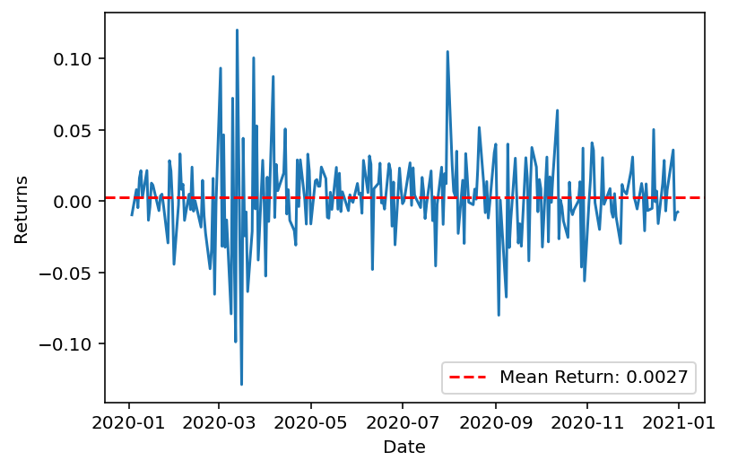

Code
import yfinance as yf
import numpy as np
import matplotlib.pyplot as plt
ticker = 'AAPL'
data = yf.download(ticker, start='2020-01-01', end='2021-01-01')['Adj Close']
returns = data.pct_change().dropna()
mean_return = np.mean(returns)
plt.plot(returns)
plt.axhline(y=mean_return, color='r', linestyle='--', label=f'Mean Return: {mean_return:.4f}')
plt.xlabel('Date')
plt.ylabel('Returns')
plt.legend()
plt.show()[*********************100%%**********************] 1 of 1 completed